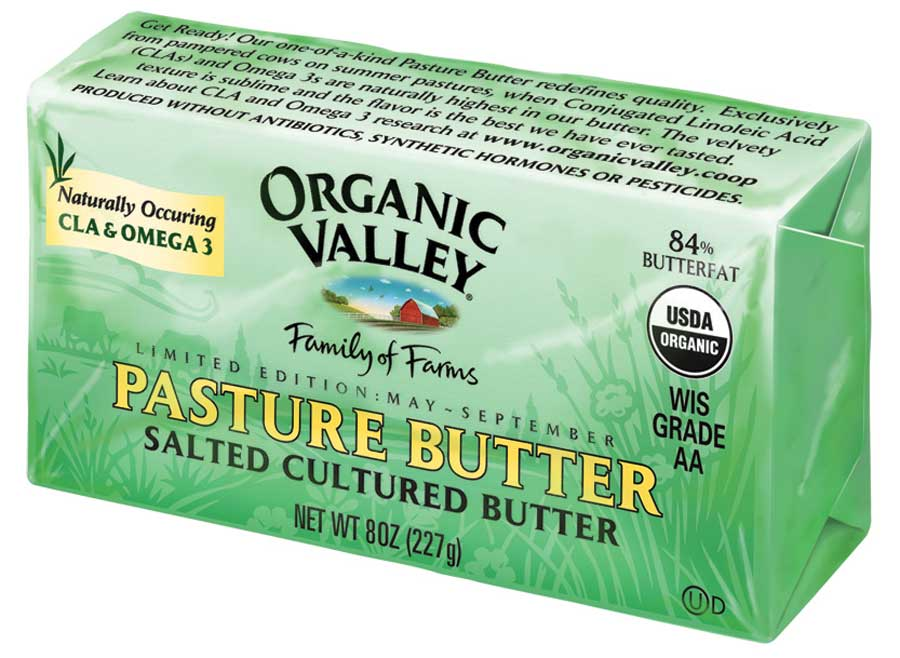

Organic Valley, that brand you may recognize from the organic section of your grocery store, has a fabulous new offering: pasture butter!
Pasture butter is produced without any harmful and unnecessary pesticides, antibiotics or synthetic hormones, and the animals involved in its production are humanely raised.
Pasture butter is only produced during the summer (May to September) from the certified organic milk of pasture-raised cows. Grass-fed animals have their most abundant buffet of nutritious greens precisely during this time, and that translates into some supremely healthy dairy products. Ever heard of CLA? Conjugated linoleic acid is a naturally occurring trans fatty acid (this is not the man-made bad guy) created in the gut of grazing animals. Studies have found that it may be a cancer-fighter and immunity-booster.
1. Real flavor. It’s rich, complex, a little nutty, a little grassy, and … well … very buttery. Organic Valley produces pasture butter in small batches and churns it longer than standard butter, which reduces moisture and increases yummy butterfat. Live cultures are added to the cream to ripen it, yielding sweeter and more complex flavors. (See How to Make Butter and Buttermilk for more on cultured butter.)
2. Amazing texture. It’s creamy, thick, dense, silky smooth and super-duper-spreadable. The spreadability of butter is determined by its ratio of saturated to unsaturated fat. If it’s relatively easy to spread, it has more unsaturated fat and less saturated fat. And a 2006 study found that the softer the butter, the more fresh pasture was in the cow’s diet.
3. Good as gold. The pretty yellow color of pasture butter is evidence of its high vitamin and beta-carotene content. Grasses eaten while they are alive are higher in vitamins E, A and beta carotene than the standard commercial dairy diet, and those nutrients end up in the butter. Some inferior butters add color to trick consumers. Always check the label!
4. Respect for the seasons. Early summer butter used to command a premium price as compared to the butter you could get the rest of the year. But that was before our food system replaced seasonal and regional variation with homogeneity. Organic Valley Pasture Butter appropriately acknowledges Mother Nature.
Organic Valley Pasture Butter is sold in grocery stores; visit Organic Valley's website to find some.
|
 ORGANIC VALLEY Pasture butter is higher in good-for-you fats, and simply delicious! |
|
|